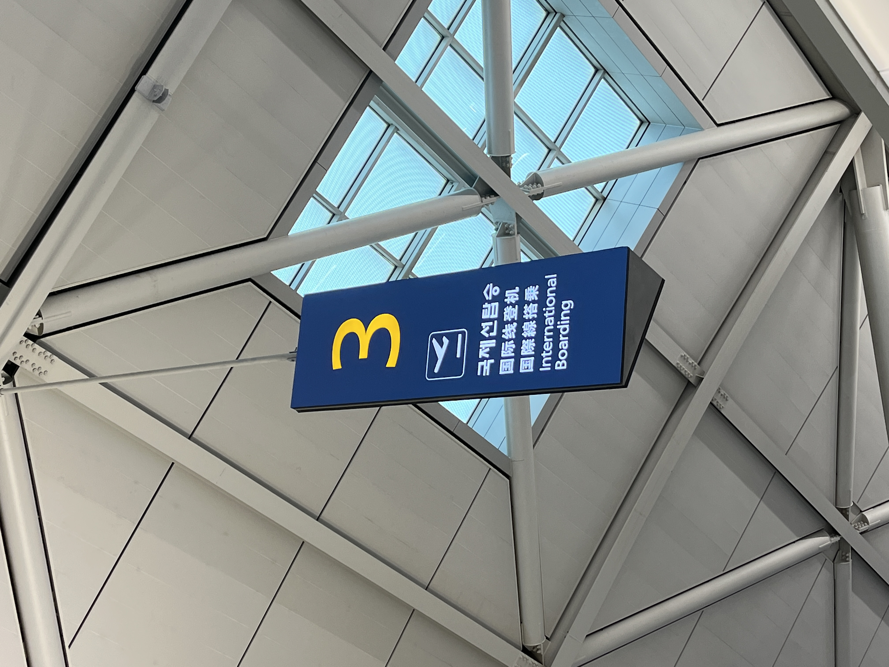
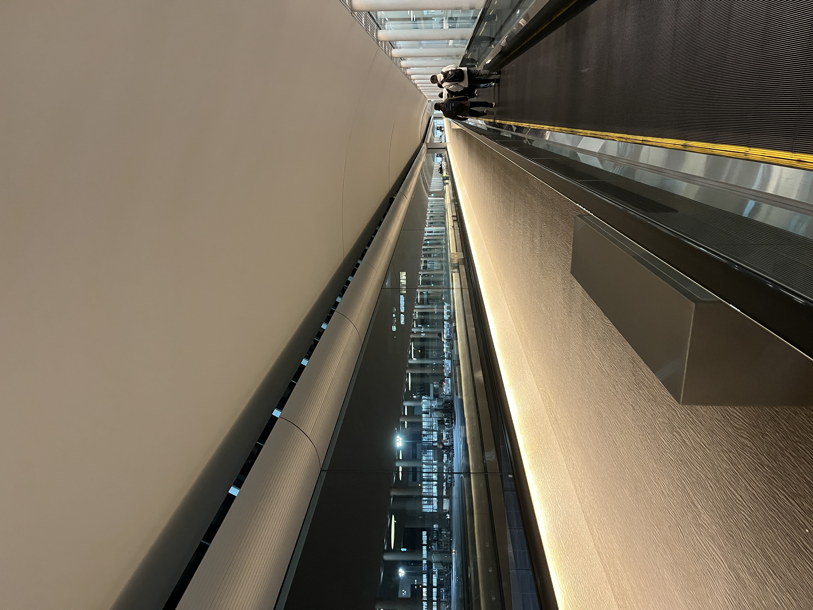
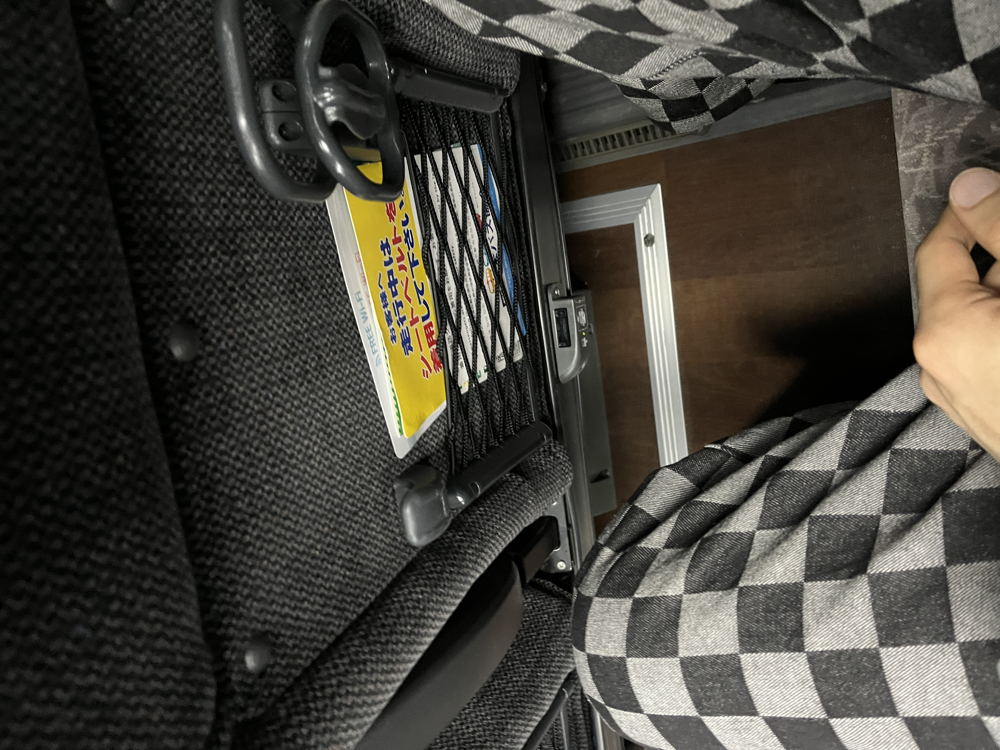
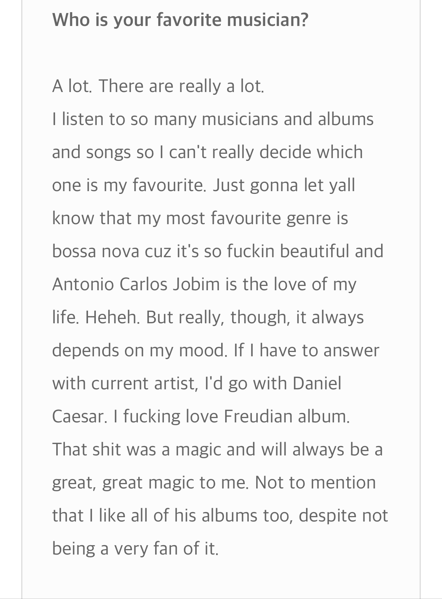
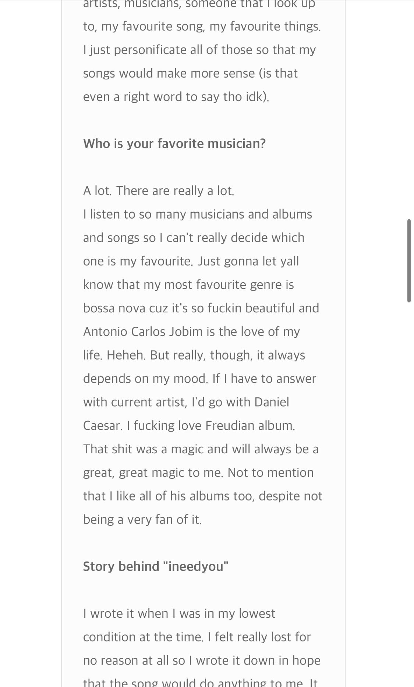
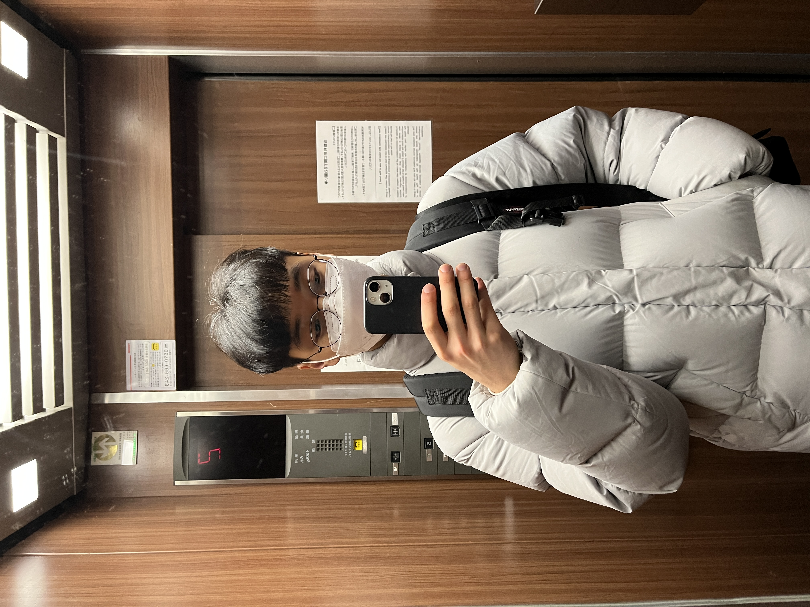
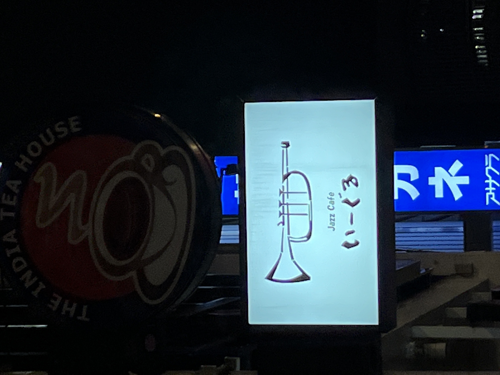
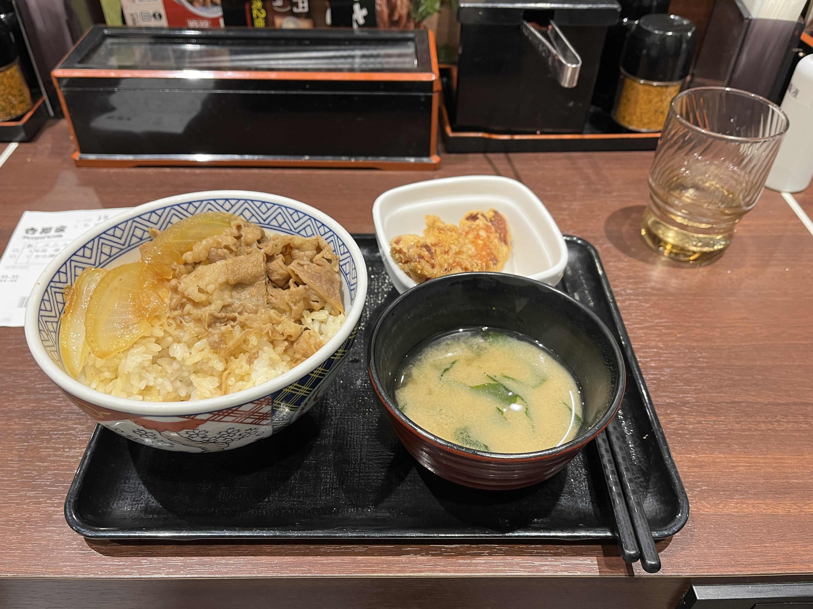
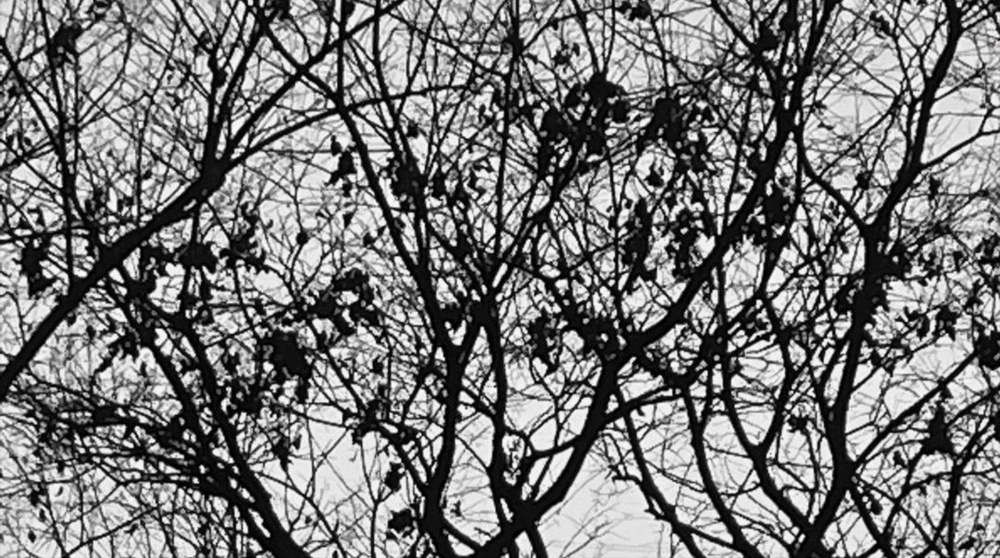

2023年 - 1月 - 6日
여행 기간은 1주일. 반은 도쿄에, 나머지 반은 오타루이다.
15시 30분. 나리타행 비행기.

9학년 여름. 독일을 혼자 출국할 때와 같이, 혼자하는 출국심사는 제법 익숙하다.


공항에서 버스와 지하철로 숙소까지 향한다.
어둠이 나린 도시
속 버스 안.
홋카이도를 맞이하기 전 러브레터의 ost를 들어본다.
뭔가 오글거리는 느낌.
사운드클라우드에서 vietra의 음악으로 바꿔 들어본다.


참아왔던 것. 오랜 숙원사업인 양 인터뷰를 찾아본다.
Lost in Translation..
불이 꺼진 버스 안에서
보는 도쿄는.
밤이사.
폐전.
사랑도 통역이 되나요?
도쿄! 봉준호. 미셸 공드리. 레오 까락스.
버스 자리 앞 그물망 속 광고 책자와 물걸이 플라스틱 조각이 다시 원점으로 만든다.
숙소로 가는 길목 앞. 협소한 라면 가게가 인상깊다. 저녁으로 그곳에서 라면을 먹는 계획을 짠다.
음식 골목 끝자락에 위치한 호텔. 타일로 덮혀있고 1층에는 공간이 비어있다. 흡연자가 있었던 것 같다.
2층 라운지. 체크인 하는 중. 일본어를 전혀 알아듣지 못하는데도 불구하고 당당한 일본어가 속사포로 들린다. 기세가 등등하다. 다르다.
커피? 커피? 커피를 준비해 준다는 말인가? 아뿔싸 여권을 카피해도 되냐는 말. 일본어로 듣는 영어는 생소하다. 아차 마그도나르도의 나라.
방으로 들어가자 음식 냄새가 이미 방안에 들어가 있다. 어둡고 칙칙한 느낌. 쾌적하나 저렴하다. 신주쿠. 지하철역 주변, 애초 33만원에 구한 숙소
가격을 떠올린다.

저녁을 먹으러 나가는 엘리베이터 안.
음식 골목에 있던 이자카야에 가기에는 아직 갓 일본에 떨어진 한국인.
그것도 일본의 수도에-!
작은 라면집을 떠올린다.


숙소 골목 길 앞에 있던 라면집을 구글로 미리 가본다.
모두 일본어로 되어있으며 가게의 회전율이
매우 빨랐던 이미지가 동시에 떠오른다.
가게 앞에서 주문해야 하는 일본어 자판기의 뜻을 알 수
없는 자판기에 겁먹는다.
일단 오른쪽으로 틀어 식당을 찾아 나선다.
이럴려고 마음먹고 온 여행이 아니다.
그럼에도 첫날이니까..
방금 막 도착했으니까, 한발 물러선다. 비겁하다.

트럼펫이 그려진 jaZZ CAFE 간판.
이곳이 아니더라도
일본에서 재즈바를 반드시 가겠다는 다짐을 한다.


어두컴컴한 큰대로변의 건물들을 따라가다보면
횡단보도 앞 24시간 할 것 같은 밥집이 나온다.
가게 밖에 붙여진 사진으로 보아 덮밥집인듯하다.
가운데 요상하게 밥먹는 자리가 있다.
더 이상 물러나지 않고 들어간다.
일본은 입구에서 자리를
안내해줄때까지 기다려야하는 문화였던가?
한국처럼 그냥 내 눈앞에 테이블앞에 앉아도 되나?
일단 그냥 빈자리에 앉는다.
넥타이를 맨 남성 몇 명이 이미 식사를 하고 있다.
